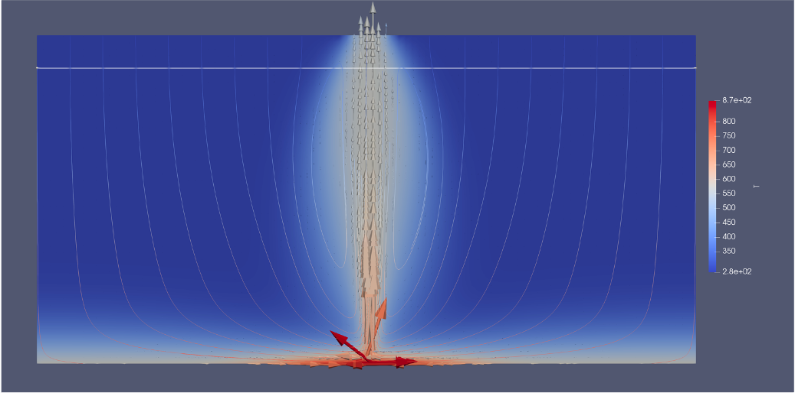

Hydrothermal convection test case
Prepare case files
To get started we will run the Regular2DBox case from the cookbook directory of HydrothermalFoam. This cookbooks describes how we can simulate a simple hydrothermal convection cell. It resolves hydrothermal convection driven by a gaussian-shaped constant temperature boundary condition at the bottom.
Copy the case into your shared working directory (probably $HOME/HydrothermalFoam_runs). You need to do this within the docker container (your right-hand shell in Visual Studio Code if you followed the recommended setup). Cd into your shared folder and type this:
cd $HOME/HydrothermalFoam_runs
cp -r $HOME/HydrothermalFoam/cookbooks/2d/Regular2DBox .
Check out the directory structure shown in Listing 12.
1.
2|-- 0
3| |-- T
4| |-- p
5| -- permeability
6|-- a.foam
7|-- clean.sh
8|-- constant
9| |-- g
10| -- thermophysicalProperties
11|-- run.sh
12 -- system
13 |-- blockMeshDict
14 |-- controlDict
15 |-- fvSchemes
16 -- fvSolution.
The 0 directory now has entries for T (temperature) and p (pressure) our new primary variables, and for permeability, which we will discuss later.
Tip
Most OpenFoam cases include scripts like run.sh and clean.sh. The run.sh script is a good starting point for “understanding” a case. It lists all commands that have to be executed (e.g. meshing, setting of properties, etc.) to run a case. The clean.sh script cleans up the case and deletes e.g. the mesh and all output directories. Have a look into these files and see if you understand them!
The 0 directory contains all initial and boundary conditions, the system folder contains all controlling parameter files, and the constant folder contains constant properties like the mesh - which we will create next.
Equation of state and thermophysical properties
To compute the thermodynamic properties of water, we use Xthermo, a a novel implementation of the H2O-NaCl equation-of-state by [Driesner & Heinrich, 2007].
xThermoProperties
Just like everthing else, the paramters of the equation-of-state are set in a dictionary. Within the constant folder, there is a dictionary called xThermoProperties. It’s structure is shown in lst:2dbox:xThermoProps.
1/*--------------------------------*- C++ -*----------------------------------*\
2| ========= | |
3| \\ / F ield | OpenFOAM: The Open Source CFD Toolbox |
4| \\ / O peration | Version: 5 |
5| \\ / A nd | Web: www.OpenFOAM.org |
6| \\/ M anipulation | |
7\*---------------------------------------------------------------------------*/
8FoamFile
9{
10 version 2.0;
11 format ascii;
12 class dictionary;
13 location "constant";
14 object xThermoProperties;
15}
16
17fluid H2O-NaCl; //H2O, H2O-NaCl
18backend IAPS84; //IAPS84, IAPWS95, IAPWS95_CoolProp
19
20H2O-NaCl
21{
22 constX 0.0;
23}
The key properties are the choice of fluid (H2O or H2O-NaCl) and the backend (IAPS84, IAPWS95, IAPWS95_CoolProp). The backend defines the implementation of the equation-of-state. The constX parameter sets the constant salinity of the fluid in mass fraction (no phase separation phenomena are implemented in this version, so that the salinity is a constant). Here we set it to zero, so that we simulate pure water.
transportProperties
Next we can review the properties of the solid matrix, which are set within the constant/transportProperties dictionary. Its structure is shown in lst:2dbox:transProps.
/*--------------------------------*- C++ -*----------------------------------*\
| ========= | |
| \\ / F ield | OpenFOAM: The Open Source CFD Toolbox |
| \\ / O peration | Version: 5 |
| \\ / A nd | Web: www.OpenFOAM.org |
| \\/ M anipulation | |
\*---------------------------------------------------------------------------*/
FoamFile
{
version 2.0;
format ascii;
class dictionary;
location "constant";
object transportProperties;
}
porosity porosity [0 0 0 0 0 0 0] 0.1;
kr kr [1 1 -3 -1 0 0 0] 1.5;
cp_rock cp_rock [0 2 -2 -1 0 0 0] 880;
rho_rock rho_rock [1 -3 0 0 0 0 0] 3000;
Mesh generation
The case is run on a simple 2-d-box-like geometry and the mesh is build using blockMesh, just like in the previous lecture on cavity flow. Look at blockMeshDict and check that you sill understand the structure. Afterwards, you can create the mesh:
blockMesh
After making the mesh, you can use Paraview to visualize it,
touch a.foam
paraview a.foam
Boundary conditions
Next we need to set boundary conditions. Open the file T inside the 0 directory from your local left-hand shell.
code 0/T
1/*--------------------------------*- C++ -*----------------------------------*\
2| ========= | |
3| \\ / F ield | OpenFOAM: The Open Source CFD Toolbox |
4| \\ / O peration | Version: 5 |
5| \\ / A nd | Web: www.OpenFOAM.org |
6| \\/ M anipulation | |
7\*---------------------------------------------------------------------------*/
8FoamFile
9{
10 version 2.0;
11 format ascii;
12 class volScalarField;
13 object T;
14}
15// * * * * * * * * * * * * * * * * * * * * * * * * * * * * * * * * * * * * * //
16
17dimensions [0 0 0 1 0 0 0];
18
19internalField uniform 278.15; //278.15 K = 5 C
20
21boundaryField
22{
23 left
24 {
25 type zeroGradient;
26 }
27 right
28 {
29 type zeroGradient;
30 }
31 top
32 {
33 //type fixedValue;
34 //value uniform 273.15;
35 type inletOutlet;
36 phi phi;
37 inletValue uniform 278.15;
38 }
39 bottom
40 {
41 type codedFixedValue;
42 value uniform 873.15;
43 name gaussShapeT;
44 code #{
45 scalarField x(this->patch().Cf().component(0));
46 double wGauss=200;
47 double x0=1000;
48 double Tmin=573;
49 double Tmax=873.15;
50 scalarField T(Tmin+(Tmax-Tmin)*exp(-(x-x0)*(x-x0)/(2*wGauss*wGauss)));
51 operator==(T);
52 #};
53 }
54 frontAndBack
55 {
56 type empty;
57 }
58}
59
60// ************************************************************************* //
The boundary conditions are again set for the patches that were defined in the blockMeshDict. Notice how the side are insulating (zeroGradient). The top has a boundary condition called inletOutlet; it sets a constant inflow temperature (recharge of cold seawater) and assumes zeroGradient for the outflow (mimicing free fluid venting). The bottom boundary condition is special, it is set to codedFixedValue. The codedFixedValue BC allows “programming” a boundary condition on the fly. Here a gaussian-shapes constant temperature boundary condition is programmed. Note that x(this->patch().Cf().component(0)) is the x-coordinate of each FV face of the patch “bottom”.
Units are set by the dimensions keyword. The entries refer to the standard SI units [Kg m s K mol A cd]. By having a one in the fourth columns, the units of the defined properties has units of Kelvin.
We also need to set boundary conditions for pressure.
code 0/p
1/*--------------------------------*- C++ -*----------------------------------*\
2| ========= | |
3| \\ / F ield | OpenFOAM: The Open Source CFD Toolbox |
4| \\ / O peration | Version: 5 |
5| \\ / A nd | Web: www.OpenFOAM.org |
6| \\/ M anipulation | |
7\*---------------------------------------------------------------------------*/
8FoamFile
9{
10 version 2.0;
11 format ascii;
12 class volScalarField;
13 object p;
14}
15// * * * * * * * * * * * * * * * * * * * * * * * * * * * * * * * * * * * * * //
16
17dimensions [1 -1 -2 0 0 0 0];
18
19internalField uniform 300e5;
20
21boundaryField
22{
23 left
24 {
25 type noFlux;
26 }
27 right
28 {
29 type noFlux;
30 }
31 top
32 {
33 type submarinePressure;
34 value uniform 300e5;
35 }
36 bottom
37 {
38 type noFlux;
39 }
40 frontAndBack
41 {
42 type empty;
43 }
44}
45
46// ************************************************************************* //
The noFlux boundary conditions, sets the pressure gradient to zero (horizontal direction) and hydrostatic (vertical direction), so that no flow occurs through these boundaries. The submarinePressure boundary condition is provided by HydrothermalFoam and sets the pressure according to water depth. Change it to fixedValue; we will discuss the special boundary conditions later.
Permeability
In hydrothermal convection simulations, the fluid properties are given by the used EOS (details on this in the next lecture). What we need to set are the solid properties like permeability, solid density, solid specific heat, and porosity. These are set in two different files. Permeabilty is treated as a variable and is set in the 0 directory.
code 0/permeability
1/*--------------------------------*- C++ -*----------------------------------*\
2| ========= | |
3| \\ / F ield | OpenFOAM: The Open Source CFD Toolbox |
4| \\ / O peration | Version: 5.0 |
5| \\ / A nd | Web: www.OpenFOAM.org |
6| \\/ M anipulation | |
7\*---------------------------------------------------------------------------*/
8FoamFile
9{
10 version 2.0;
11 format ascii;
12 class volScalarField;
13 location "0";
14 object permeability;
15}
16// * * * * * * * * * * * * * * * * * * * * * * * * * * * * * * * * * * * * * //
17
18dimensions [0 2 0 0 0 0 0];
19
20internalField uniform 1e-14;
Again, check that you understand the units, which here add up to m^2.
Case control
Finally, we need to set some control parameters like the time step, run time, output writing. These kind of parameters are set in system/controlDict. Open it and explore the values. You will need to change the application to the new solver HydrothermalSinglePhaseDarcyFoam_xThermo.
code system/controlDict
1/*--------------------------------*- C++ -*----------------------------------*\
2| ========= | |
3| \\ / F ield | OpenFOAM: The Open Source CFD Toolbox |
4| \\ / O peration | Version: 5 |
5| \\ / A nd | Web: www.OpenFOAM.org |
6| \\/ M anipulation | |
7\*---------------------------------------------------------------------------*/
8FoamFile
9{
10 version 2.0;
11 format ascii;
12 class dictionary;
13 object controlDict;
14}
15
16application HTFoam;
17startFrom startTime;
18startTime 0;
19stopAt endTime;
20endTime 86400000000;
21deltaT 864000;
22adjustTimeStep yes;
23maxCo 0.5;
24maxPorousCo 0.5;
25maxDeltaT 86400000;
26writeControl adjustableRunTime;
27writeInterval 864000000;
28purgeWrite 0;
29writeFormat ascii;
30writePrecision 6;
31writeCompression off;
32timeFormat general;
33timePrecision 14;
34runTimeModifiable true;
35libs
36(
37 "libHydrothermalBoundaryConditions.so"
38);
The solver we are using is called HydrothermalSinglePhaseDarcyFoam_xThermo. In addition, we are including the library “libHydrothermalBoundaryConditions.so”, which provides special boundary conditions for submarine hydrothermal flow calculations.
Solver controls
The numerical schemes and solver settings are set in the files fvSchemes and fvSolution, which are located in the system directory. Open them and check that you understand the settings. You can leave them as they are for now.
1/*--------------------------------*- C++ -*----------------------------------*\
2| ========= | |
3| \\ / F ield | OpenFOAM: The Open Source CFD Toolbox |
4| \\ / O peration | Version: 10 (modern style) |
5| \\ / A nd | |
6| \\/ M anipulation | |
7\*---------------------------------------------------------------------------*/
8FoamFile
9{
10 version 2.0;
11 format ascii;
12 class dictionary;
13 location "system";
14 object fvSolution;
15}
16
17 // ------------------------------------------------------------------------- //
18 // Linear solvers
19 // ------------------------------------------------------------------------- //
20 solvers
21 {
22 // Pressure
23 p
24 {
25 solver GAMG;
26 tolerance 1e-10; // linear solve absolute stop
27 relTol 0.01; // linear relative reduction (per solve)
28 smoother DICGaussSeidel;
29 }
30
31 pFinal
32 {
33 $p;
34 tolerance 1e-10;
35 relTol 0;
36 }
37
38 // Temperature
39 T
40 {
41 solver GAMG;
42 tolerance 1e-08;
43 relTol 0.01;
44 smoother DILUGaussSeidel;
45 }
46
47 TFinal
48 {
49 $T;
50 tolerance 1e-08;
51 relTol 0;
52 }
53 }
54
55 relaxationFactors
56 {
57 equations
58 {
59 p 1;
60 T 1;
61 }
62 }
63
64 PIMPLE
65 {
66 nOuterCorrectors 0;
67 nCorrectors 1;
68 nNonOrthogonalCorrectors 1;
69
70 // Foundation OF expects single values here:
71 residualControl
72 {
73 p 1e-4;
74 T 1e-4;
75 }
76
77 // (Optional) you can keep other PIMPLE keys here, but NOT dict-style RC.
78 }
79
80 PTCOUPLING
81 {
82 // Physical coupling criteria used by your init loop (custom)
83 maxDeltaP 10; // [Pa] absolute pressure change
84 maxInitOuterIters 200;
85 // number of iterations in main loop
86 tightCouplingIters 3; // K: number of mini Picard iterations per time step (0..3 typical)
87
88 }
Running the case
Now we are finally ready to run our first test case. Just type this into your docker shell:
HTFoam
Notice how several directories are appearing, which contain the intermediate results. You can postprocess the case by simply opening the a.foam file from paraview.

Fig. 14 Results of the Regular2DBox example calculation.